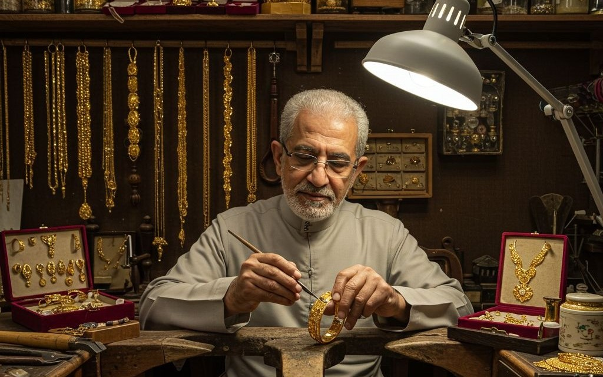

من نحن
نحن منصة متخصصة في رواية قصص وحكايات شوارع القاهرة التاريخية، نهدف إلى إحياء التراث الثقافي والحضاري للمدينة من خلال سرد القصص والحكايات التي شكلت هوية هذه الشوارع العريقة. نسعى إلى ربط الأجيال الحالية بتاريخهم العريق وتقديم محتوى ثقافي غني يعكس عراقة وأصالة القاهرة التاريخية.
الشوارع
المزيد
شارع المعز

شارع الصاغة

شارع النحاسين
شارع الخيامية
اماكن للزياره
المزيدشخصيات
المزيد
محمد علي باشا

الظاهر سيف الدين برقوق

الحاكم بامر الله
جولات
المزيد.jpg)
جوله في شارع المعز

جوله في شارع الصاغه